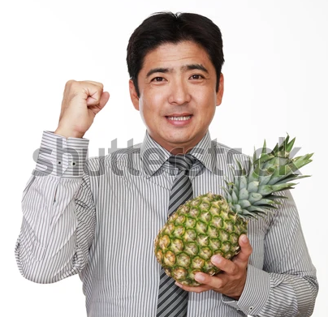
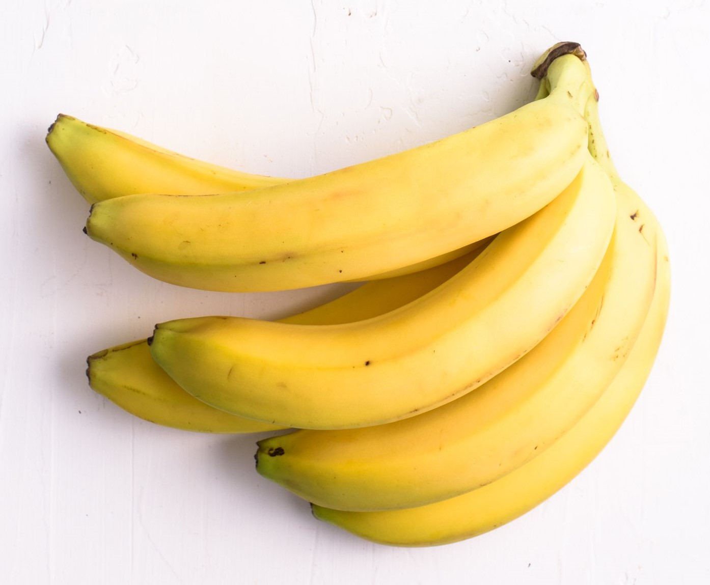

Om Oss
BAWA Enterprise er det ledende selskapet i Norge innen fersk frukt, bær, grønnsaker, salater og poteter. Selskapet opererer også innen andre ferske produkter som blomster og planter, ferske drikker og påsmurte produkter. BAWA håndterer årlig over 500 000 tonn ferske produkter fra 1400 leverandører i 85 land på alle kontinenter. Norsk frukt og grønt står for 34 prosent. Konsernet sysselsetter rundt 3400 medarbeidere og omsatte for ca. 17 milliarder kr i 2017.
Vår visjon
Visjonen og verdier gjelder for alle i BAWA på tvers av landegrenser, avdelinger og funksjoner. De ligger til grunn for forholdet til kunder, leverandører, kollegaer og samarbeidspartnere. Slik jobber vi mot samme mål og drar i samme retning. Visjonen "En sunnere og ferskere framtid" understøttes av verdiene: Målrettet - Vi leverer vekst, løsninger, resultater og kvalitet, og er til å stole på. Ansvarlig - Vi har høy integritet og forplikter oss til etiske og ansvarlig handlinger, eksternt og internt. Inspirerende - Vi inspirerer til sunn livsstil gjennom engasjerende aktiviteter og kommunikasjon. Samspillende - Vi jobber sammen om gode løsninger og bidrar til godt arbeidsmiljø. Vår forretningsidé er å skape en ansvarlig, grønn vekst ved å levere ferske og sunne produkter, basert på samarbeid i hele verdikjeden. Vi handler ferske kvalitetsprodukter fra produsenter i hele Norge, og fra alle kontinenter. Det gjør oss til en stor global aktør, noe som gir oss et tilsvarende ansvar for hvordan vi opptrer.

Bærekraft og miljø
Verdens befolkning øker, og det er behov for mer mat. Som et av verdens største selskaper innenfor fersk frukt og grønt, jobber vi for å sikre bærekraftig matproduksjon og verdiskaping der vi handler. Det grønne skiftet innebærer en omstilling fra en økonomi og verdiskaping basert på fossile ressurser (kull, olje og gass), til en verdiskaping basert på fornybare, biologiske ressurser som frukt og grønt. Det kan vi lykkes med gjennom en bærekraftig, økonomisk vekst og økt forbruk av frukt og grønt.
Vår visjon
Bærekraft og miljø
Kevin - CEO Philip - Assisterende vaskehjelp
Jeg liker frukt Jeg liker ikke frukt